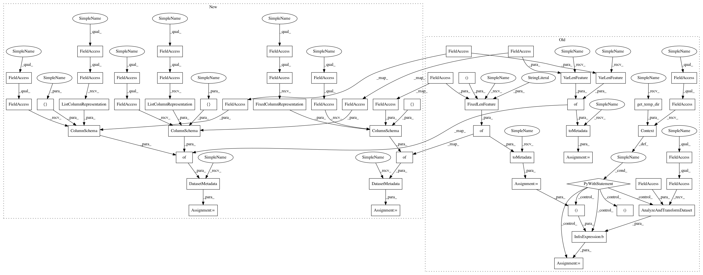

14ee57f33aa9a07fa6440c049fefd47099dbc5ae,tensorflow_transform/beam/impl_test.py,BeamImplTest,testUniquesAnalyzerWithFrequencyThreshold,#BeamImplTest#,670
Before Change
input_data = [{"a": "hello hello world"},
{"a": "hello goodbye world"},
{"a": "hello goodbye foo"}]
input_schema = self.toMetadata({
"a": tf.FixedLenFeature((), tf.string, ""),
})
with beam_impl.Context(temp_dir=self.get_temp_dir()):
transformed_dataset, _ = (
(input_data, input_schema)
| beam_impl.AnalyzeAndTransformDataset(preprocessing_fn))
// Generated vocab (ordered by frequency, then value) should be:
// ["hello", "world", "goodbye", "foo"]. After applying frequency_threshold=2
// this becomes
// ["hello", "world", "goodbye"].
expected_transformed_data = [{
"index1": [0, 0, 1],
"index2": [0, 0, 1]
}, {
"index1": [0, 2, 1],
"index2": [0, 2, 1]
}, {
"index1": [0, 2, -99],
"index2": [0, 2, -9]
}]
expected_transformed_schema = self.toMetadata({
"index1": tf.VarLenFeature(tf.int64),
"index2": tf.VarLenFeature(tf.int64)
})
self.assertDatasetsEqual(
transformed_dataset,
(expected_transformed_data, expected_transformed_schema))
After Change
{"a": "hello goodbye world"},
{"a": "hello goodbye foo"}
]
input_metadata = dataset_metadata.DatasetMetadata({
"a": sch.ColumnSchema(tf.string, [], sch.FixedColumnRepresentation())
})
// Generated vocab (ordered by frequency, then value) should be:
// ["hello", "world", "goodbye", "foo"]. After applying frequency_threshold=2
// this becomes
// ["hello", "world", "goodbye"].
expected_data = [
{"index1": [0, 0, 1], "index2": [0, 0, 1]},
{"index1": [0, 2, 1], "index2": [0, 2, 1]},
{"index1": [0, 2, -99], "index2": [0, 2, -9]}
]
expected_metadata = dataset_metadata.DatasetMetadata({
"index1": sch.ColumnSchema(tf.int64, [None],
sch.ListColumnRepresentation()),
"index2": sch.ColumnSchema(tf.int64, [None],
sch.ListColumnRepresentation())
})
self.assertAnalyzeAndTransformResults(
input_data, input_metadata, preprocessing_fn, expected_data,
expected_metadata)
In pattern: SUPERPATTERN
Frequency: 3
Non-data size: 56
Instances
Project Name: tensorflow/transform
Commit Name: 14ee57f33aa9a07fa6440c049fefd47099dbc5ae
Time: 2017-04-26
Author: no-reply@google.com
File Name: tensorflow_transform/beam/impl_test.py
Class Name: BeamImplTest
Method Name: testUniquesAnalyzerWithFrequencyThreshold
Project Name: tensorflow/transform
Commit Name: 14ee57f33aa9a07fa6440c049fefd47099dbc5ae
Time: 2017-04-26
Author: no-reply@google.com
File Name: tensorflow_transform/beam/impl_test.py
Class Name: BeamImplTest
Method Name: testUniquesAnalyzerWithFrequencyThreshold
Project Name: tensorflow/transform
Commit Name: 14ee57f33aa9a07fa6440c049fefd47099dbc5ae
Time: 2017-04-26
Author: no-reply@google.com
File Name: tensorflow_transform/beam/impl_test.py
Class Name: BeamImplTest
Method Name: testUniquesAnalyzerWithFrequencyThresholdTooHigh
Project Name: tensorflow/transform
Commit Name: 14ee57f33aa9a07fa6440c049fefd47099dbc5ae
Time: 2017-04-26
Author: no-reply@google.com
File Name: tensorflow_transform/beam/impl_test.py
Class Name: BeamImplTest
Method Name: testUniquesAnalyzerWithTopK